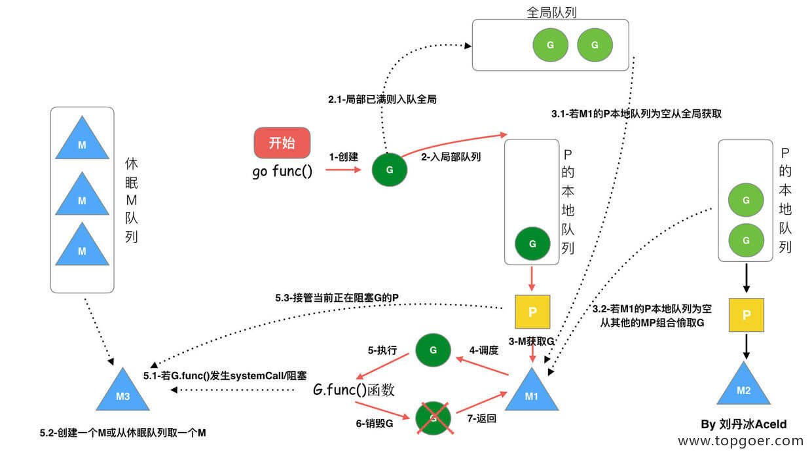

1. GMP 原理与调度
1.1.1. 一、Golang “调度器” 的由来？
(1) 单进程时代不需要调度器
我们知道，一切的软件都是跑在操作系统上，真正用来干活 (计算) 的是 CPU。早期的操作系统每个程序就是一个进程，知道一个程序运行完，才能进行下一个进程，就是 “单进程时代”
一切的程序只能串行发生。
早期的单进程操作系统，面临 2 个问题：
单一的执行流程，计算机只能一个任务一个任务处理。
进程阻塞所带来的 CPU 时间浪费。
那么能不能有多个进程来宏观一起来执行多个任务呢？
后来操作系统就具有了最早的并发能力：多进程并发，当一个进程阻塞的时候，切换到另外等待执行的进程，这样就能尽量把 CPU 利用起来，CPU 就不浪费了。
(2) 多进程 / 线程时代有了调度器需求
在多进程 / 多线程的操作系统中，就解决了阻塞的问题，因为一个进程阻塞 cpu 可以立刻切换到其他进程中去执行，而且调度 cpu 的算法可以保证在运行的进程都可以被分配到 cpu 的运行时间片。这样从宏观来看，似乎多个进程是在同时被运行。
但新的问题就又出现了，进程拥有太多的资源，进程的创建、切换、销毁，都会占用很长的时间，CPU 虽然利用起来了，但如果进程过多，CPU 有很大的一部分都被用来进行进程调度了。
怎么才能提高 CPU 的利用率呢？
但是对于 Linux 操作系统来讲，cpu 对进程的态度和线程的态度是一样的。
很明显，CPU 调度切换的是进程和线程。尽管线程看起来很美好，但实际上多线程开发设计会变得更加复杂，要考虑很多同步竞争等问题，如锁、竞争冲突等。
(3) 协程来提高 CPU 利用率
多进程、多线程已经提高了系统的并发能力，但是在当今互联网高并发场景下，为每个任务都创建一个线程是不现实的，因为会消耗大量的内存 (进程虚拟内存会占用 4GB [32 位操作系统], 而线程也要大约 4MB)。
大量的进程 / 线程出现了新的问题
- 高内存占用
- 调度的高消耗 CPU
好了，然后工程师们就发现，其实一个线程分为 “内核态 “线程和” 用户态 “线程。
一个 “用户态线程” 必须要绑定一个 “内核态线程”，但是 CPU 并不知道有 “用户态线程” 的存在，它只知道它运行的是一个 “内核态线程”(Linux 的 PCB 进程控制块)。
这样，我们再去细化去分类一下，内核线程依然叫 “线程 (thread)”，用户线程叫 “协程 (co-routine)”.
看到这里，我们就要开脑洞了，既然一个协程 (co-routine) 可以绑定一个线程 (thread)，那么能不能多个协程 (co-routine) 绑定一个或者多个线程 (thread) 上呢。
之后，我们就看到了有 3 中协程和线程的映射关系：
N:1 关系
N 个协程绑定 1 个线程，优点就是协程在用户态线程即完成切换，不会陷入到内核态，这种切换非常的轻量快速。但也有很大的缺点，1 个进程的所有协程都绑定在 1 个线程上
缺点：
某个程序用不了硬件的多核加速能力
一旦某协程阻塞，造成线程阻塞，本进程的其他协程都无法执行了，根本就没有并发的能力了。
1:1 关系
1 个协程绑定 1 个线程，这种最容易实现。协程的调度都由 CPU 完成了，不存在 N:1 缺点，
缺点：
- 协程的创建、删除和切换的代价都由 CPU 完成，有点略显昂贵了。
M:N 关系
M 个协程绑定 1 个线程，是 N:1 和 1:1 类型的结合，克服了以上 2 种模型的缺点，但实现起来最为复杂。
协程跟线程是有区别的，线程由 CPU 调度是抢占式的，协程由用户态调度是协作式的，一个协程让出 CPU 后，才执行下一个协程。
(4) Go 语言的协程 goroutine
Go 为了提供更容易使用的并发方法，使用了 goroutine 和 channel。goroutine 来自协程的概念，让一组可复用的函数运行在一组线程之上，即使有协程阻塞，该线程的其他协程也可以被 runtime 调度，转移到其他可运行的线程上。最关键的是，程序员看不到这些底层的细节，这就降低了编程的难度，提供了更容易的并发。
Go 中，协程被称为 goroutine，它非常轻量，一个 goroutine 只占几 KB，并且这几 KB 就足够 goroutine 运行完，这就能在有限的内存空间内支持大量 goroutine，支持了更多的并发。虽然一个 goroutine 的栈只占几 KB，但实际是可伸缩的，如果需要更多内容，runtime 会自动为 goroutine 分配。
Goroutine 特点：
- 占用内存更小（几 kb）
- 调度更灵活 (runtime 调度)
(5) 被废弃的 goroutine 调度器
好了，既然我们知道了协程和线程的关系，那么最关键的一点就是调度协程的调度器的实现了。
Go 目前使用的调度器是 2012 年重新设计的，因为之前的调度器性能存在问题，所以使用 4 年就被废弃了，那么我们先来分析一下被废弃的调度器是如何运作的？
大部分文章都是会用 G 来表示 Goroutine，用 M 来表示线程，那么我们也会用这种表达的对应关系。
下面我们来看看被废弃的 golang 调度器是如何实现的？
M 想要执行、放回 G 都必须访问全局 G 队列，并且 M 有多个，即多线程访问同一资源需要加锁进行保证互斥 / 同步，所以全局 G 队列是有互斥锁进行保护的。
老调度器有几个缺点：
- 创建、销毁、调度 G 都需要每个 M 获取锁，这就形成了激烈的锁竞争。
- M 转移 G 会造成延迟和额外的系统负载。比如当 G 中包含创建新协程的时候，M 创建了 G’，为了继续执行 G，需要把 G’交给 M’执行，也造成了很差的局部性，因为 G’和 G 是相关的，最好放在 M 上执行，而不是其他 M’。
- 系统调用 (CPU 在 M 之间的切换) 导致频繁的线程阻塞和取消阻塞操作增加了系统开销。
1.1.2. 二、Goroutine 调度器的 GMP 模型的设计思想
面对之前调度器的问题，Go 设计了新的调度器。
在新调度器中，出列 M (thread) 和 G (goroutine)，又引进了 P (Processor)。
Processor，它包含了运行 goroutine 的资源，如果线程想运行 goroutine，必须先获取 P，P 中还包含了可运行的 G 队列。
(1) GMP 模型
在 Go 中，线程是运行 goroutine 的实体，调度器的功能是把可运行的 goroutine 分配到工作线程上。

- 全局队列（Global Queue）：存放等待运行的 G。
- P 的本地队列：同全局队列类似，存放的也是等待运行的 G，存的数量有限，不超过 256 个。新建 G’时，G’优先加入到 P 的本地队列，如果队列满了，则会把本地队列中一半的 G 移动到全局队列。
- P 列表：所有的 P 都在程序启动时创建，并保存在数组中，最多有 GOMAXPROCS(可配置) 个。
- M：线程想运行任务就得获取 P，从 P 的本地队列获取 G，P 队列为空时，M 也会尝试从全局队列拿一批 G 放到 P 的本地队列，或从其他 P 的本地队列偷一半放到自己 P 的本地队列。M 运行 G，G 执行之后，M 会从 P 获取下一个 G，不断重复下去。
Goroutine 调度器和 OS 调度器是通过 M 结合起来的，每个 M 都代表了 1 个内核线程，OS 调度器负责把内核线程分配到 CPU 的核上执行。
有关 P 和 M 的个数问题
1、P 的数量：
- 由启动时环境变量 $GOMAXPROCS 或者是由 runtime 的方法 GOMAXPROCS() 决定。这意味着在程序执行的任意时刻都只有 $GOMAXPROCS 个 goroutine 在同时运行。
2、M 的数量:
- go 语言本身的限制：go 程序启动时，会设置 M 的最大数量，默认 10000. 但是内核很难支持这么多的线程数，所以这个限制可以忽略。
- runtime/debug 中的 SetMaxThreads 函数，设置 M 的最大数量
- 一个 M 阻塞了，会创建新的 M。
M 与 P 的数量没有绝对关系，一个 M 阻塞，P 就会去创建或者切换另一个 M，所以，即使 P 的默认数量是 1，也有可能会创建很多个 M 出来。
P 和 M 何时会被创建
1、P 何时创建：在确定了 P 的最大数量 n 后，运行时系统会根据这个数量创建 n 个 P。
2、M 何时创建：没有足够的 M 来关联 P 并运行其中的可运行的 G。比如所有的 M 此时都阻塞住了，而 P 中还有很多就绪任务，就会去寻找空闲的 M，而没有空闲的，就会去创建新的 M。
(2) 调度器的设计策略
复用线程：避免频繁的创建、销毁线程，而是对线程的复用。
1）work stealing 机制
当本线程无可运行的 G 时，尝试从其他线程绑定的 P 偷取 G，而不是销毁线程。
2）hand off 机制
当本线程因为 G 进行系统调用阻塞时，线程释放绑定的 P，把 P 转移给其他空闲的线程执行。
利用并行：GOMAXPROCS 设置 P 的数量，最多有 GOMAXPROCS 个线程分布在多个 CPU 上同时运行。GOMAXPROCS 也限制了并发的程度，比如 GOMAXPROCS = 核数/2，则最多利用了一半的 CPU 核进行并行。
抢占：在 coroutine 中要等待一个协程主动让出 CPU 才执行下一个协程，在 Go 中，一个 goroutine 最多占用 CPU 10ms，防止其他 goroutine 被饿死，这就是 goroutine 不同于 coroutine 的一个地方。
全局 G 队列：在新的调度器中依然有全局 G 队列，但功能已经被弱化了，当 M 执行 work stealing 从其他 P 偷不到 G 时，它可以从全局 G 队列获取 G。
(3) go func () 调度流程

从上图我们可以分析出几个结论：
1、我们通过 go func () 来创建一个 goroutine；
2、有两个存储 G 的队列，一个是局部调度器 P 的本地队列、一个是全局 G 队列。新创建的 G 会先保存在 P 的本地队列中，如果 P 的本地队列已经满了就会保存在全局的队列中；
3、G 只能运行在 M 中，一个 M 必须持有一个 P，M 与 P 是 1：1 的关系。M 会从 P 的本地队列弹出一个可执行状态的 G 来执行，如果 P 的本地队列为空，就会想其他的 MP 组合偷取一个可执行的 G 来执行；
4、一个 M 调度 G 执行的过程是一个循环机制；
5、当 M 执行某一个 G 时候如果发生了 syscall 或则其余阻塞操作，M 会阻塞，如果当前有一些 G 在执行，runtime 会把这个线程 M 从 P 中摘除 (detach)，然后再创建一个新的操作系统的线程 (如果有空闲的线程可用就复用空闲线程) 来服务于这个 P；
6、当 M 系统调用结束时候，这个 G 会尝试获取一个空闲的 P 执行，并放入到这个 P 的本地队列。如果获取不到 P，那么这个线程 M 变成休眠状态， 加入到空闲线程中，然后这个 G 会被放入全局队列中。
(4) 调度器的生命周期
特殊的 M0 和 G0
M0
M0 是启动程序后的编号为 0 的主线程，这个 M 对应的实例会在全局变量 runtime.m0 中，不需要在 heap 上分配，M0 负责执行初始化操作和启动第一个 G， 在之后 M0 就和其他的 M 一样了。
G0
G0 是每次启动一个 M 都会第一个创建的 gourtine，G0 仅用于负责调度的 G，G0 不指向任何可执行的函数，每个 M 都会有一个自己的 G0。在调度或系统调用时会使用 G0 的栈空间，全局变量的 G0 是 M0 的 G0。
我们来跟踪一段代码
package main
import "fmt"
func main() {
fmt.Println("Hello world")
}
接下来我们来针对上面的代码对调度器里面的结构做一个分析。
也会经历如上图所示的过程：
- 1.runtime 创建最初的线程 m0 和 goroutine g0，并把 2 者关联。
- 2.调度器初始化：初始化 m0、栈、垃圾回收，以及创建和初始化由 GOMAXPROCS 个 P 构成的 P 列表。
- 3.示例代码中的 main 函数是 main.main，runtime 中也有 1 个 main 函数 ——runtime.main，代码经过编译后，runtime.main 会调用 main.main，程序启动时会为 runtime.main 创建 goroutine，称它为 main goroutine 吧，然后把 main goroutine 加入到 P 的本地队列。
- 4.启动 m0，m0 已经绑定了 P，会从 P 的本地队列获取 G，获取到 main goroutine。
- 5.G 拥有栈，M 根据 G 中的栈信息和调度信息设置运行环境
- 6.M 运行 G
- 7.G 退出，再次回到 M 获取可运行的 G，这样重复下去，直到 main.main 退出，runtime.main 执行 Defer 和 Panic 处理，或调用 runtime.exit 退出程序。
调度器的生命周期几乎占满了一个 Go 程序的一生，runtime.main 的 goroutine 执行之前都是为调度器做准备工作，runtime.main 的 goroutine 运行，才是调度器的真正开始，直到 runtime.main 结束而结束。
(5) 可视化 GMP 编程
有 2 种方式可以查看一个程序的 GMP 的数据。
方式 1：go tool trace
trace 记录了运行时的信息，能提供可视化的 Web 页面。
简单测试代码：main 函数创建 trace，trace 会运行在单独的 goroutine 中，然后 main 打印”Hello World” 退出。
trace.go
package main
import (
"os"
"fmt"
"runtime/trace"
)
func main() {
//创建trace文件
f, err := os.Create("trace.out")
if err != nil {
panic(err)
}
defer f.Close()
//启动trace goroutine
err = trace.Start(f)
if err != nil {
panic(err)
}
defer trace.Stop()
//main
fmt.Println("Hello World")
}
运行程序
$ go run trace.go
Hello World
会得到一个 trace.out 文件，然后我们可以用一个工具打开，来分析这个文件。
$ go tool trace trace.out
2020/02/23 10:44:11 Parsing trace...
2020/02/23 10:44:11 Splitting trace...
2020/02/23 10:44:11 Opening browser. Trace viewer is listening on http://127.0.0.1:33479
我们可以通过浏览器打开 http://127.0.0.1:33479 网址，点击 view trace 能够看见可视化的调度流程。
G 信息
点击 Goroutines 那一行可视化的数据条，我们会看到一些详细的信息。
一共有两个G在程序中，一个是特殊的G0，是每个M必须有的一个初始化的G，这个我们不必讨论。
其中 G1 应该就是 main goroutine (执行 main 函数的协程)，在一段时间内处于可运行和运行的状态。
M 信息
点击 Threads 那一行可视化的数据条，我们会看到一些详细的信息。
一共有两个 M 在程序中，一个是特殊的 M0，用于初始化使用，这个我们不必讨论。
P 信息
G1 中调用了 main.main，创建了 trace goroutine g18。G1 运行在 P1 上，G18 运行在 P0 上。
这里有两个 P，我们知道，一个 P 必须绑定一个 M 才能调度 G。
我们在来看看上面的 M 信息。
我们会发现，确实 G18 在 P0 上被运行的时候，确实在 Threads 行多了一个 M 的数据，点击查看如下：
多了一个 M2 应该就是 P0 为了执行 G18 而动态创建的 M2.
方式 2：Debug trace
package main
import (
"fmt"
"time"
)
func main() {
for i := 0; i < 5; i++ {
time.Sleep(time.Second)
fmt.Println("Hello World")
}
}
编译
$ go build trace2.go
通过 Debug 方式运行
$ GODEBUG=schedtrace=1000 ./trace2
SCHED 0ms: gomaxprocs=2 idleprocs=0 threads=4 spinningthreads=1 idlethreads=1 runqueue=0 [0 0]
Hello World
SCHED 1003ms: gomaxprocs=2 idleprocs=2 threads=4 spinningthreads=0 idlethreads=2 runqueue=0 [0 0]
Hello World
SCHED 2014ms: gomaxprocs=2 idleprocs=2 threads=4 spinningthreads=0 idlethreads=2 runqueue=0 [0 0]
Hello World
SCHED 3015ms: gomaxprocs=2 idleprocs=2 threads=4 spinningthreads=0 idlethreads=2 runqueue=0 [0 0]
Hello World
SCHED 4023ms: gomaxprocs=2 idleprocs=2 threads=4 spinningthreads=0 idlethreads=2 runqueue=0 [0 0]
Hello World
SCHED：调试信息输出标志字符串，代表本行是 goroutine 调度器的输出；0ms：即从程序启动到输出这行日志的时间；gomaxprocs: P 的数量，本例有 2 个 P, 因为默认的 P 的属性是和 cpu 核心数量默认一致，当然也可以通过 GOMAXPROCS 来设置；idleprocs: 处于 idle 状态的 P 的数量；通过 gomaxprocs 和 idleprocs 的差值，我们就可知道执行 go 代码的 P 的数量；threads: os threads/M 的数量，包含 scheduler 使用的 m 数量，加上 runtime 自用的类似 sysmon 这样的 thread 的数量；spinningthreads: 处于自旋状态的 os thread 数量；idlethread: 处于 idle 状态的 os thread 的数量；runqueue=0： Scheduler 全局队列中 G 的数量；[0 0]: 分别为 2 个 P 的 local queue 中的 G 的数量。
1.1.3. 三、Go 调度器调度场景过程全解析
(1) 场景 1
P 拥有 G1，M1 获取 P 后开始运行 G1，G1 使用 go func() 创建了 G2，为了局部性 G2 优先加入到 P1 的本地队列。
(2) 场景 2
G1 运行完成后 (函数：goexit)，M 上运行的 goroutine 切换为 G0，G0 负责调度时协程的切换（函数：schedule）。从 P 的本地队列取 G2，从 G0 切换到 G2，并开始运行 G2 (函数：execute)。实现了线程 M1 的复用。
(3) 场景 3
假设每个 P 的本地队列只能存 3 个 G。G2 要创建了 6 个 G，前 3 个 G（G3, G4, G5）已经加入 p1 的本地队列，p1 本地队列满了。
(4) 场景 4
G2 在创建 G7 的时候，发现 P1 的本地队列已满，需要执行负载均衡 (把 P1 中本地队列中前一半的 G，还有新创建 G 转移到全局队列)
（实现中并不一定是新的 G，如果 G 是 G2 之后就执行的，会被保存在本地队列，利用某个老的 G 替换新 G 加入全局队列）
这些 G 被转移到全局队列时，会被打乱顺序。所以 G3,G4,G7 被转移到全局队列。
(5) 场景 5
G2 创建 G8 时，P1 的本地队列未满，所以 G8 会被加入到 P1 的本地队列。
G8 加入到 P1 点本地队列的原因还是因为 P1 此时在与 M1 绑定，而 G2 此时是 M1 在执行。所以 G2 创建的新的 G 会优先放置到自己的 M 绑定的 P 上。
(6) 场景 6
规定：在创建 G 时，运行的 G 会尝试唤醒其他空闲的 P 和 M 组合去执行。
假定 G2 唤醒了 M2，M2 绑定了 P2，并运行 G0，但 P2 本地队列没有 G，M2 此时为自旋线程（没有 G 但为运行状态的线程，不断寻找 G）。
(7) 场景 7
M2 尝试从全局队列 (简称 “GQ”) 取一批 G 放到 P2 的本地队列（函数：findrunnable()）。M2 从全局队列取的 G 数量符合下面的公式：
n = min(len(GQ)/GOMAXPROCS + 1, len(GQ/2))
至少从全局队列取 1 个 g，但每次不要从全局队列移动太多的 g 到 p 本地队列，给其他 p 留点。这是从全局队列到 P 本地队列的负载均衡。
假定我们场景中一共有 4 个 P（GOMAXPROCS 设置为 4，那么我们允许最多就能用 4 个 P 来供 M 使用）。所以 M2 只从能从全局队列取 1 个 G（即 G3）移动 P2 本地队列，然后完成从 G0 到 G3 的切换，运行 G3。
(8) 场景 8
假设 G2 一直在 M1 上运行，经过 2 轮后，M2 已经把 G7、G4 从全局队列获取到了 P2 的本地队列并完成运行，全局队列和 P2 的本地队列都空了，如场景 8 图的左半部分。
全局队列已经没有 G，那 m 就要执行 work stealing (偷取)：从其他有 G 的 P 哪里偷取一半 G 过来，放到自己的 P 本地队列。P2 从 P1 的本地队列尾部取一半的 G，本例中一半则只有 1 个 G8，放到 P2 的本地队列并执行。
(9) 场景 9
G1 本地队列 G5、G6 已经被其他 M 偷走并运行完成，当前 M1 和 M2 分别在运行 G2 和 G8，M3 和 M4 没有 goroutine 可以运行，M3 和 M4 处于自旋状态，它们不断寻找 goroutine。
为什么要让 m3 和 m4 自旋，自旋本质是在运行，线程在运行却没有执行 G，就变成了浪费 CPU. 为什么不销毁现场，来节约 CPU 资源。因为创建和销毁 CPU 也会浪费时间，我们希望当有新 goroutine 创建时，立刻能有 M 运行它，如果销毁再新建就增加了时延，降低了效率。当然也考虑了过多的自旋线程是浪费 CPU，所以系统中最多有 GOMAXPROCS 个自旋的线程 (当前例子中的 GOMAXPROCS=4，所以一共 4 个 P)，多余的没事做线程会让他们休眠。
(10) 场景 10
假定当前除了 M3 和 M4 为自旋线程，还有 M5 和 M6 为空闲的线程 (没有得到 P 的绑定，注意我们这里最多就只能够存在 4 个 P，所以 P 的数量应该永远是 M>=P, 大部分都是 M 在抢占需要运行的 P)，G8 创建了 G9，G8 进行了阻塞的系统调用，M2 和 P2 立即解绑，P2 会执行以下判断：如果 P2 本地队列有 G、全局队列有 G 或有空闲的 M，P2 都会立马唤醒 1 个 M 和它绑定，否则 P2 则会加入到空闲 P 列表，等待 M 来获取可用的 p。本场景中，P2 本地队列有 G9，可以和其他空闲的线程 M5 绑定。
(11) 场景 11
G8 创建了 G9，假如 G8 进行了非阻塞系统调用。
M2 和 P2 会解绑，但 M2 会记住 P2，然后 G8 和 M2 进入系统调用状态。当 G8 和 M2 退出系统调用时，会尝试获取 P2，如果无法获取，则获取空闲的 P，如果依然没有，G8 会被记为可运行状态，并加入到全局队列，M2 因为没有 P 的绑定而变成休眠状态 (长时间休眠等待 GC 回收销毁)。
1.1.4. 四、小结
总结，Go 调度器很轻量也很简单，足以撑起 goroutine 的调度工作，并且让 Go 具有了原生（强大）并发的能力。Go 调度本质是把大量的 goroutine 分配到少量线程上去执行，并利用多核并行，实现更强大的并发。
转自公众号：刘丹冰Aceld